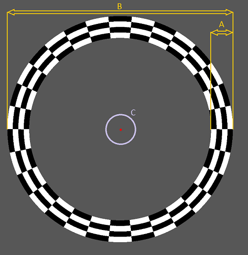

Experiment Manager Plug-in (v1.0.0.1)
Document version: 1.0
Author(s): Sven Gijsen
Date: July 2015
Introduction
The Experiment Manager Plug-in implements a Experiment Engine that you can use to present various kinds of stimuli. It can load an Experiment file (*.exml) that defines the configuration for the experiment; see the EXML-File definition. The Experiment Manager can be created and used by a script or can be used directly by executing an Experiment file by BrainStim.
Directories
The Experiment manager uses the following directories inside the main root BrainStim directory:
/outputs
this directory is used for storing files created by the Experiment Manager.
EXML-File definition
The experiment file is an XML file type that can be loaded by the Experiment Manger for its configuration. You can manually edit this document in BrainStim or another text/code editor. The first lines consist out of a file header:
<?xml version='1.0' encoding='UTF-8'?> |
The header holds the XML and EXML version, there?s no reason for a user to change this manually. You may also find text between the <!-- and --> tag, these are used for comments and the text section between these tags is not parsed by the Experiment Manager.
<defines> |
The <defines> section has an <experiment> section where the name of the experiment can be defined. Some tags include an ID="<number>" attribute, this unique ID is automatically generated and used internally by BrainStim and therefore you should not change this. The <debugmode> section defines whether the experiment should be executed in debugmode or not. This debugmode can be helpful during the setup and debugging of the experiment because it outputs some extra information regarding the experiment. Because it can slow down the experiment speed you should disable it when you need to be sure it runs smoothly.
<declarations> <object ID="0"> <class>TriggerTimer</class> <name>Timer_Object_1</name> <constructor> <param1/> </constructor> </object> <object ID="1"> <class>RetinotopyMapper</class> <name>RetinotopyMapper_object</name> <constructor> <param1/> </constructor> </object> </declarations> |
In the <declarations> section all needed experiment objects are declared so they can be used for the experiment. The name <name> of the new object that should be constructed from a class <class> together with the optional parameter(s) <param<number>> are defined her per object.
<connections> <object ID="2"> <type>signal</type> <signature>CaptureThreadTriggered(short)</signature> <target ID="1"> <type>slot</type> <signature>incrementExternalTrigger()</signature> </target> </object> <object ID="0"> <type>signal</type> <signature>timeout()</signature> <target ID="1"> <type>slot</type> <signature>incrementExternalTrigger()</signature> </target> </object> </connections> |
Inside the <connections> section the declared objects can be connected to each other (internally BrainStim is using the Qt signal/slot mechanism for establishing the connections, see http://qt-project.org/doc/qt-5.1/qtcore/signalsandslots.html). Signals and Slots can be connected to each other, the Signal or Slot (define this first by using the <type> section) signature <signature> can also be defined here.
<initializations> <object ID="0"> <type>slot</type> <signature>startTimer</signature> <parameters> <parameter ID="0"> <name>msec</name> <value>200</value> <type>double</type> </parameter> </parameters> </object> </initializations> |
Declared objects often need to be initialized before they can be used. This can be defined within the <initializations> section. Initialization is done before the experiment starts and is done by providing the type <type> and signature <signature> and the declared object ID <object ID="<number>"> which should be initialized. Furthermore parameter(s) can be defined and used for the initialization.
<actions> <blocks> <block ID="0"> <name>Fixation_Block</name> <block_number>0</block_number> <nr_of_trials>1</nr_of_trials> <nr_of_internal_triggers>8</nr_of_internal_triggers> <nr_of_external_triggers>1</nr_of_external_triggers> <object ID="1"> <parameters> parameter ID="0"> <name>RetinoPattern</name> <value>fixation</value> </parameter> <parameter ID="1"> <name>ShowFixPoint</name> <value>true</value> </parameter> </parameters> </object> </block> <block ID="1"> <name>PolarAngle_Block</name> <block_number>1</block_number> <nr_of_trials>6</nr_of_trials> <nr_of_internal_triggers>36</nr_of_internal_triggers> <nr_of_external_triggers>1</nr_of_external_triggers> <object ID="1"> </parameters> </object> </blocks> </actions> |
When the experiment starts the section within the <actions> tag is executed. In case of a triggered block design you can specify the different blocks within the <blocks> section. The <block_number> defines the order of the blocks and how they are sequentially processed during the execution of the experiment. Within a defined block the <nr_of_trials> defines how many times the block is executed before going to the next block.
A block trial is externally triggered by an external source, like a hardware trigger device or a declared automatic trigger timer. This external source is then connected inside the <connections> section to the Experiment Manager default receive slot with the signature incrementExternalTrigger(). By making use of this slot the Experiment manager know when it should switch to another block depending on the configuration within the <blocks> section. At each incrementExternalTrigger() slot execution the External Trigger count is incremented.. It takes <nr_of_external_triggers> amount of External Triggers before the Internal Trigger count is incremented, thus this works like a sort of trigger divider (External->Internal). After <nr_of_internal_triggers> amount of Internal Triggers the Experiment manager switched to the next block trial.
In the above example the first fixation block takes 8 external triggers. In case a trigger is send each 2 seconds the first block trial is 16 seconds visible on the screen.
Retinotopic Mapping
The experiment manager includes a Retinotopic mapping feature which makes it easy to show different stimuli that can be fully configured for this purpose. The following Retinotopic mapping stimuli types can be used:
- Fixation
- PolarAngle
- Eccentricity
- MovingBar
- MovingDots
To make use of one or more of these stimuli types you first have to declare (<declarations> section) an <class>RetinotopyMapper</class> derived object. Connect (<connections> section) a Trigger object to its incrementExternalTrigger() slot and make use of it inside the <actions>, <blocks> section, see example files! Each stimuli type can be configured with specific or universal parameters names (can be used for all the types). All parameter values keep their last value when switching to another block trial, so only changes need to be defined.
Universal parameters
Parameter |
Possible values |
Definition |
|---|---|---|
RetinoPattern |
String ( |
With this parameter we can define the Retinotopic Mapping type we want to use. |
StimuliRefreshRate |
Integer (0..display refresh rate) |
If 0 then it draws as fast as possible (if present waiting for a vertical sync signal). If >0 then the stimuli refresh rate (in Hertz) is synchronized with that value. |
ShowFixPoint |
Boolean ("true" or "false") (default = "true") |
Defines if the fixation point in the center of the screen is visible. |
FixationSize |
Integer value (default = 8) |
Defines the diameter of the fixation point in number of pixels |
FixationColor |
HEX string representing a RGB color, see color format (default = #FF0000) |
Use this parameter to change the color of the fixation dot, see Color Format. |
BackGroundColor |
HEX string representing a RGB color, see color format (default = #575757) |
Use this parameter to change the background color of the active stimuli area. |
StimulusWidthSpan |
Float value (default = 480 pixels) |
This parameter defines the width for the active stimuli area on the screen. |
StimulusHeightSpan |
Float value (default = 480 pixels) |
This parameter defines the height for the active stimuli area on the screen. |
AntiAliasing |
Boolean ("true" or "false") (default = "true") |
Determines whether Anti-Aliasing should be enabled for the active stimuli. |
Color Format
Sets the RGB value, which may be in one of these formats:
- #RGB (each of R, G, and B is a single hex digit) or #RRGGBB or #RRRGGGBBB or #RRRRGGGGBBBB.
- A name from the list of colors defined in the list of SVG color keyword names provided by the World Wide Web Consortium; for example, "steelblue" or "gainsboro". These color names work on all platforms.
Fixation specific parameters

The above picture shows a fixation screen example. The active stimuli area (grey) is smaller than the screen (black) size. Within this area we can see a fixation point (red).
There are no more specific parameters available for this type of stimuli; see the Universal parameters.
PolarAngle specific parameters

The above picture shows a PolarAngle screen example. The active stimuli area (grey) is smaller than the screen (black) size. Within this area we can see a fixation point (red). The wedge consists of different rings with checkers and can rotate around the center point. A full wedge rotation (360 degrees) is called one cycle.
Parameter |
Possible values |
Definition |
|---|---|---|
GapDiameter |
Integer value (>=0) (default = 20) |
The diameter (pixels) of the gap (empty circular area) centered around the fixation point |
CheckerColor1 |
HEX string representing a RGB color, see color format (default = #FFFFFF) |
Use this parameter to change the color of the first checker. |
CheckerColor2 |
HEX string representing a RGB color, see color format (default = #000000) |
Use this parameter to change the color of the second checker. |
PolarCheckAmount |
Integer value (>0) (default = 4) |
The number of checkers inside the wedge along the wedge rotation direction. |
PolarRingAmount |
Integer value (>0) (default = 20) |
The number of rings inside the wedge along the wedge direction. |
PolarWedgeSpan |
Float value (>0 && <=360) (default = 22.5) |
The total wedge span angle in degrees. |
PolarRotationDirection |
Integer value (1 or -1) (default = 1) |
The rotation direction of the wedge, 1 = Clockwise, -1 = Counterclockwise rotation. |
InternalTriggerDuration |
Float value (>0.0) (default = 2000.0) |
The expected internal trigger period time duration. This defines how fast the wedge should rotate within a cycle |
CycleTriggerAmount |
Integer value (>0) (default = 1) |
The duration of a full wedge cycle (360 degrees) in number of internal triggers, see above parameter. |
FlickrFrequency |
Float value (>0.0) (default = 5) |
The frequency of the flicker cycle (when the checker switch color). Ideally this value is equal to the StimuliRefreshRate parameter divided by an integer value. |
CorticalMagnitudeFactor |
Float value (>=0.0) (default = 0.2) |
See chapter Cortical Magnitude Factor |
DisableCortMagFac |
Boolean (true or false) (default = false) |
When enabled the single ring diameters (see A below picture) is the same for all rings, the above parameter is then automatically ignored. |
OutputTriggerFrame |
Boolean (true or false) (default = false) |
When enabled the Experiment manager saves (to the /outputs directory) at each internal trigger a file containing the current state of the visible stimuli area. |
OutputFrameFormat |
String (“PNG”, “DAT” or “CDAT”) (default = “DAT”) |
If the OutputTriggerFrame parameter is enabled then this value specifies the output format (and extension). “PNG” creates a standard (*.png) file format containing the visible stimuli area. See chapter Custom graphical DAT and CDAT format for an explanation about the DAT and CDAT format. |
OutputFrameType |
String (“Frame” or “Mask”) (default = “Frame”) |
If the OutputTriggerFrame parameter is enabled then this value specifies the output frame type. Option “Frame” outputs the active stimuli area with all color information. Option “Mask” outputs the active stimuli area black and the full wedge and/or fixation point as white. |
DiscreteTriggerSteps |
Boolean (true or false) (default = false) |
When enabled then the wedge rotates in discrete steps at each trigger step. Between two triggers the wedge holds its position. |
RandomizeTriggerSteps |
Boolean (true or false) (default = false) |
When enabled then the wedge start rotating randomly at each trigger step. Between two triggers the wedge moves smooth (only whenDiscreteTriggerSteps is disabled) in thePolarRotationDirection. The randomization makes sure that all rotation steps are performed once before going to the next cycle. |
EmptyTriggerSteps |
Integer value (>=0) (default = 0) |
This parameter defines how many Trigger Steps of a full cycle should be Empty (The Wedge is then invisible!). These Empty trigger steps are randomly chosen. The randomization keeps the history of empty trigger steps in memory within a block trial. |
RandomizeTriggerStepsArray |
None, One or more integer values (>=0) seperated by a ',' (default = "", empty array) |
This parameter is only taken into account if the 'RandomizeTriggerSteps' parameter is set to true. The default randomization is overridden by the value(s) defined here seperated by a comma. Each value refers to a specific index of the stimuli. |
EmptyTriggerStepsArray |
None, One or more integer values (>=0) seperated by a ',' (default = "", empty array) |
This parameter is only taken into account if the 'EmptyTriggerSteps' parameter is set to true. The default randomization is overridden by the value(s) defined here seperated by a comma. Each value refers to a specific index of the stimuli. |
Wedge triggered cycles and rotation direction
The below picture shows the wedge rotated at an angle of 0 degrees (at the X axis pointed to the right, with the right wedge border aligned over the X axis) when the PolarRotationDirection parameter is ?-1? (Counterclockwise).

When the PolarRotationDirection parameter is ?1? (Clockwise) then the wedge at an angle of 0 degrees is drawn like in the below picture.
A full wedge cycle is internally subdivided by the CycleTriggerAmount parameter. These sub-cycles can be randomized and empty as explained in the above parameter table. Internally these sub-cycles are indexed from [0 ... (CycleTriggerAmount-1)]. The first index (with value 0) is always at 0 degree and is dependent of the PolarRotationDirection, as explained above. These indexed are internally also used to keep track of the randomly chosen history and to output the result in the experiment output file (automatically generated in the /outputs directory for each run), see the Experiment Output File chapter. The below picture shows an example of an wedge together with the indexes (CycleTriggerAmount =12).
PolarRotationDirection = 1, see below
|
Index 0 |
|
Index 3 |
|
Index 6 |
Index 9 |
|||||||||
Index 1 |
Index 4 |
|
Index 7 |
Index 10 |
|||||||||||
|
Index 2 |
Index 5 |
|
Index 8 |
Index 11 |


PolarRotationDirection = -1, see below
Index 0 |
|
Index 3 |
Index 6 |
|
Index 9 |
||||||||||
Index 1 |
|
Index 4 |
Index 7 |
Index 10 |
|||||||||||
Index 2 |
|
Index 5 |
|
Index 8 |
|
Index 11 |
Cortical Magnitude Factor
This factor defines how the polar rings are distributed from the outer wedge ring towards the center.
If for example the CorticalMagnitudeFactor = 0.2 then:
A = 0.2 * B
A' = 0.2 * B'
...
The most inner ring is automatically extended till the border of the defined gap diameter. If the CorticalMagnitudeFactor = 0.0 then the rings are also equally divided over the wedge (B).
Eccentricity specific parameters

The above picture shows a Eccentricity screen example. Within the active stimuli area (grey) a ring is presented consisting out of several sub-rings each divided in checkers with an alternating color. Again in the center of the screen a fixation point (red) is shown. The total ring center point remains positioned over the center of the active stimuli area whereas the ring diameter changes within a cycle.

Parameter |
Possible values |
Definition |
|---|---|---|
GapDiameter |
Integer value (>=0) (default = 20) |
The diameter (pixels) of the gap (empty circular area) centered around the fixation point, see C |
CheckerColor1 |
HEX string representing a RGB color, see color format (default = #FFFFFF) |
Use this parameter to change the color of the first checker |
CheckerColor2 |
HEX string representing a RGB color, see color format (default = #000000) |
Use this parameter to change the color of the second checker |
EccentricityCheckAmount |
Integer value (>0) (default = 20) |
The number of checkers inside one sub-ring |
EccentricityRingAmount |
Integer value (>0) (default = 4) |
The number of sub-rings, see A |
FlickrFrequency |
Float value (>0.0) (default = 5) |
The frequency of the flicker cycle(when the checkers change color). Ideally this value is equal to the StimuliRefreshRate parameter divided by an integer value |
EccentricityDirection |
Integer value (1 or -1) (default = 1) |
1 = Increased ring diameter, -1 = Decreased ring diameter |
InternalTriggerDuration |
Float value (>0.0) (default = 2000.0) |
The expected internal trigger period time duration, this defines how fast the ring should increase/decrease within a cycle |
CorticalMagnitudeFactor |
Float value (>=0.0) (default = 0.2) |
See the below CorticalMagnitudeFactor chapter |
DisableCortMagFac |
Boolean (true or false) (default = false) |
When enabled the total width of the sub-rings (see A) remains the same independent off the eccentricity. This total ring diameter (see A) then is always the CorticalMagnitudeFactor times the maximum radius (see B) |
CycleTriggerAmount |
Integer value (>0) (default = nr_of_internal_triggers) |
The duration of a full cycle (increased/decreased diameter) in amount of triggers, the minimal diameter is the gap diameter, see C |
OutputTriggerFrame |
Boolean (true or false) (default = false) |
When enabled the Experiment manager saves (to the /outputs directory) at each internal trigger a file containing the current state of the visible stimuli area. Please bear in mind that enabling this option may dramatically slow down the experiment and may cause that the requested StimuliRefreshRate is not met! |
OutputFrameFormat |
String (“PNG”, “DAT” or “CDAT”) (default = “DAT”) |
If the OutputTriggerFrame parameter is enabled then this value specifies the output format (and extension). “PNG” creates a standard (*.png) file format containing the visible stimuli area. See chapter Custom graphical DAT and CDAT format for an explanation about the DAT and CDAT format. |
OutputFrameType |
String (“Frame” or “Mask”) (default = “Frame”) |
If the OutputTriggerFrame parameter is enabled then this value specifies the output frame type. Option “Frame” outputs the active stimuli area with all color information. Option “Mask” outputs the active stimuli area black and the full ring and/or fixation point as white |
DiscreteTriggerSteps |
Boolean (true or false) (default = false) |
When enabled then the ring eccentricity occurs in discrete steps at each trigger step. Between two triggers the ring holds its position |
RandomizeTriggerSteps |
Boolean (true or false) (default = false) |
When enabled then the ring eccentricity is randomly at each trigger step. Between two triggers the ring eccentricity is at a constant speed (only when DiscreteTriggerSteps is disabled) in the EccentricityDirection. The randomization makes sure that all eccentricity steps are performed once before going to the next cycle |
EmptyTriggerSteps |
Integer value (>=0) (default = 0) |
This parameter defines how many Trigger Steps of a full cycle should be Empty (The Ring is then invisible!). These Empty trigger steps are randomly chosen. The randomization keeps the history of empty trigger steps in memory within a block trial |
RandomizeTriggerStepsArray |
None, One or more integer values (>=0) seperated by a ',' (default = "", empty array) |
This parameter is only taken into account if the 'RandomizeTriggerSteps' parameter is set to true. The default randomization is overridden by the value(s) defined here seperated by a comma. Each value refers to a specific index of the stimuli. |
EmptyTriggerStepsArray |
None, One or more integer values (>=0) seperated by a ',' (default = "", empty array) |
This parameter is only taken into account if the 'EmptyTriggerSteps' parameter is set to true. The default randomization is overridden by the value(s) defined here seperated by a comma. Each value refers to a specific index of the stimuli. |
CorticalMagnitudeFactor
This factor defines how the total width (see A) of all the visible rings compared to the eccentricity amount. This width is dependant of the eccentricity (ring diameter) at that moment (doesn?t apply when the DisableCortMagFac is true). The smallest ring eccentricity diameter is equal to the gap diameter (see C).
E.g. CorticalMagnitudeFactor = 0.2 ==>
A = 0.2 * B
All individual ring widths are equal.
Eccentricity triggered cycles and Eccentricity direction
A full Eccentricity cycle is internally subdivided by the CycleTriggerAmount parameter. These sub-cycles can be randomized and empty as explained in the above parameter table. Internally these sub-cycles are indexed from [0 ... (CycleTriggerAmount-1)]. The indexing is dependent of the EccentricityDirection. These indexed are internally also used to keep track of the randomly chosen history and to output the result in the experiment output file (automatically generated in the /outputs directory for each run), see the Experiment Output File chapter. The below picture shows an example of an ring together with the indexes (CycleTriggerAmount =12).
EccentricityDirection = 1, see below
|
Index 0 |
|
Index 3 |
|
Index 6 |
|
Index 9 |
||||||||
|
Index 1 |
|
Index 4 |
|
Index 7 |
|
Index 10 |
||||||||
Index 2 |
|
Index 5 |
Index 8 |
Index 11 |


EccentricityDirection = -1, see below
Index 0 |
Index 3 |
|
Index 6 |
Index 9 |
|||||||||||
|
Index 1 |
|
Index 4 |
|
Index 7 |
|
Index 10 |
||||||||
|
Index 2 |
|
Index 5 |
|
Index 8 |
|
Index 11 |
MovingBar specific parameters

The above picture shows a MovingBar screen example. Within the active stimuli area (grey) a moving bar is
presented consisting out of several checkers with an alternating color along its width and height. Again in
the center of the screen a fixation point (red) is shown. The bar moves in the direction perpendicular to
the bar width (in the direction of the fixation point). The bar angle remains the same during the movement.

Parameter |
Possible values |
Definition |
|---|---|---|
CheckerColor1 |
HEX string representing a RGB color, see color format (default = #FFFFFF) |
Use this parameter to change the color of the first checker |
CheckerColor2 |
HEX string representing a RGB color, see color format (default = #000000) |
Use this parameter to change the color of the second checker |
MovingBarHeight |
Float value (>0.0) (default = 10.0) |
E.g. if the total bar movement is 640 pixel then the bar width is 640/10.0 = 64 pixels (see B) |
MovingBarHeightCheckAmount |
Integer value (>0) (default = 4) |
The (maximum visible) number of checkers of the bar in the height direction of the bar (see B). The number of checkers in the bar width direction (see A) is automatically calculated making sure that the checkers are square (same width as height). |
MovingBarDirection |
Integer value (1 or -1) (default = 1) |
1 = Up to Down, -1 = Down to Up |
MovingBarAngle |
Float value (>0.0) (default = 45.0) |
The angle of the bar, 0 degrees is along the X axis. A larger value turns counterclockwise |
MovingBarCoverage |
Float value (>0.0) (default = 0.5) |
The active stimulus area coverage of a full bar cycle movement. See chapter MovingBarCoverage for a detailed description |
FlickrFrequency |
Float value (>0.0) (default = 5) |
The frequency of the flicker cycle(when the checkers change color). Ideally this value is equal to the StimuliRefreshRate parameter divided by an integer value |
MovingBarIncludeOppositeDirection (Disabled option!) |
Boolean (true or false) (default = false) |
This option is not available for the current version |
InternalTriggerDuration |
Float value (>0.0) (default = 2000.0) |
The expected internal trigger period time duration, this defines how fast the bar should move within a cycle |
CycleTriggerAmount |
Integer value (>0) (default = nr_of_internal_triggers) |
The duration of a full cycle (full coverage bar movement) in amount of triggers (see C) |
OutputTriggerFrame |
Boolean (true or false) (default = false) |
When enabled the Experiment manager saves (to the /outputs directory) at each internal trigger a file containing the current state of the visible stimuli area. Please bear in mind that enabling this option may dramatically slow down the experiment and may cause that the requested StimuliRefreshRate is not met! |
OutputFrameFormat |
String (“PNG”, “DAT” or “CDAT”) (default = “DAT”) |
If the OutputTriggerFrame parameter is enabled then this value specifies the output format (and extension). “PNG” creates a standard (*.png) file format containing the visible stimuli area. See chapter Custom graphical DAT and CDAT format for an explanation about the DAT and CDAT format. |
OutputFrameType |
String (“Frame” or “Mask”) (default = “Frame”) |
If the OutputTriggerFrame parameter is enabled then this value specifies the output frame type. Option “Frame” outputs the active stimuli area with all color information. Option “Mask” outputs the active stimuli area black and the full bar and/or fixation point as white |
DiscreteTriggerSteps |
Boolean (true or false) (default = false) |
When enabled then the bar movement occurs in discrete steps at each trigger step. Between two triggers the ring holds its position |
RandomizeTriggerSteps |
Boolean (true or false) (default = false) |
When enabled then the bar movement is randomly at each trigger step. Between two triggers the bar movement is at a constant speed (only when DiscreteTriggerSteps is disabled) in the MovingBarDirection. The randomization makes sure that all bar movement steps are performed once before going to the next cycle |
EmptyTriggerSteps |
Integer value (>=0) (default = 0) |
This parameter defines how many Trigger steps of a full cycle should be Empty (The Bar is then invisible!). These Empty trigger steps are randomly chosen. The randomization keeps the history of empty trigger steps in memory within a block trial |
RandomizeTriggerStepsArray |
None, One or more integer values (>=0) seperated by a ',' (default = "", empty array) |
This parameter is only taken into account if the 'RandomizeTriggerSteps' parameter is set to true. The default randomization is overridden by the value(s) defined here seperated by a comma. Each value refers to a specific index of the stimuli. |
EmptyTriggerStepsArray |
None, One or more integer values (>=0) seperated by a ',' (default = "", empty array) |
This parameter is only taken into account if the 'EmptyTriggerSteps' parameter is set to true. The default randomization is overridden by the value(s) defined here seperated by a comma. Each value refers to a specific index of the stimuli. |
MovingBarCoverage

We see a active stimulus area (smaller than the full screen area) inside the red rectangle covering the diagonal B. The bar is at the first initial position and moves along the direction of the yellow arrow(A) until it reaches the orange border above the fixation dot and the full cycle is complete. The stimulus screen coverage is within the orange borders. The coverage is defined as:
A = MovingBarCoverage * B
MovingBar triggered cycles and MovingBar direction
A full MovingBar cycle is internally subdivided by the CycleTriggerAmount parameter. These sub-cycles can be randomized and empty as explained in the above parameter table. Internally these sub-cycles are indexed from [0 ... (CycleTriggerAmount-1)]. The indexing is dependent of the MovingBarDirection. These indexed are internally also used to keep track of the randomly chosen history and to output the result in the experiment output file (automatically generated in the /outputs directory for each run), see the Experiment Output File chapter. The below picture shows an example of an ring together with the indexes (CycleTriggerAmount =12).
MovingBarDirection = 1, see below (MovingBarAngle = 30)
|
Index 0 |
Index 3 |
|
Index 6 |
|
Index 9 |
|||||||||
|
Index 1 |
Index 4 |
Index 7 |
Index 10 |
|||||||||||
|
Index 2 |
|
Index 5 |
|
Index 8 |
|
Index 11 |


MovingBarDirection = -1, see below (MovingBarAngle = 30)
|
Index 0 |
|
Index 3 |
|
Index 6 |
|
Index 9 |
||||||||
Index 1 |
Index 4 |
Index 7 |
|
Index 10 |
|||||||||||
|
Index 2 |
|
Index 5 |
Index 8 |
|
Index 11 |
MovingDots specific parameters

The above picture shows a MovingDots screen example. Within the active stimuli area (grey) several dots are presented
inside two areas (Hemifields). These dots can move around when they leave the Hemifield they automatically appear again
in the opposite corner moving with the same speed and direction/angle making sure that the amount of visible dots remains
constant. In the above example the left and right hemifields are visible and divided by a distance from each other. Both
Hemifields contain the dots at the same position (They are identical). The distance between the hemifields could also be
made zero which would create one area with the dots smoothly moving from one area to the other. Again in the center of
the screen a fixation point (red) is shown.
Parameter |
Possible values |
Definition |
|---|---|---|
MovingDotsColor |
HEX string representing a RGB color, see color format (default = #FFFFFF) |
Use this parameter to change the color of the moving dots |
|
MovingDotsMinMoveSpeed and MovingDotsMaxMoveSpeed |
Float value (>0.0) (default = 4.0(both)) |
The minimal and maximal movement speed of the Dots in Pixels/StimuliRefreshRate |
|
MovingDotsMinMoveAngle and MovingDotsMaxMoveAngle
|
Integer values (>=0) (default Min=0, Max=359) |
The minimal and maximal (random) movement angle of the Dots in degrees |
MovingDotsNrOfDots |
Integer value (>0) (default =1000) |
The amount of active visible moving dots per visible Hemispere. If a dot moves over the corner of an Hemiphere the it will can be halfway visible at the e.g. the left and right side where it moves then back in again. |
MovingDotsDotSize |
Integer value (>0) (default =12) |
The diameter of a single dot in pixels |
MovingDotsHemifield |
String ("Left" or "Right" or "Both") (default = "Both") |
Defines which Hemifield(s) are visible within the active stimuli area |
MovingDotsPixelFromCenter |
Integer value (>=0) (default =100) |
The distance between the Hemifield (left and/or right) and the center X position on the screen in pixels (see red line). E.g. a value of 100 will make sure that the left and right hemifield are 2*100 pixels seperated from each other. |
MovingDotsStationairy |
Boolean (true or false) (default = false) |
Defines whether the dots should move or hold their initial position |
MovingDotsRetinalPosition |
-- |
This parameter is not yet implemented... |
MovingDotsHemiFieldWidth |
Integer value (>0) (default = 320) |
This defines the width of one Hemifield (including the MovingDotsPixelFromCenter), see the above yellow square. |
MovingDotsFieldHemiHeight |
Integer value (>0) (default = 240) |
This defines the height of one Hemifield, see the above yellow square. |
Experiment Manager Usage
When you start the Experiment Manager and run an experiment it shows (after the initialization <initializations> section) first an informative screen were you need to press the ?TAB? key to proceed or the ?CTRL+a? key combination to abort the experiment (You may also use this combination during a running experiment to abort). After you pressed the ?TAB? key it waits for the first Internal Trigger. After it receives this trigger the experiment starts running.
Experiment Manager Public Signal and Slots
The Experiment Manager exposes several public Signals and Slots that can be used from within c++ code, a script context or experiment file. These are explained in the Experiment Manager script class reference.
Experiment Output File
Custom graphical DAT and CDAT format
DAT format
The custom graphical DAT format is created for users who want an easily accessible file format. The file first always starts with a unique header (32 bits), containing the value (0xCAFE1234).
#define ARGB_FORMAT_HEADER 0xCAFE1234 |
After the header the next 8 bytes are reserved for the Image resolution (width (=32 bits) and height (=32 bits)).
quint32 width = image.width(); quint32 height = image.height(); |
Hereafter the actual Image data can be found per pixel as a Qt?s QRgb type.
QRgb type definition
An ARGB quadruplet on the format #AARRGGBB, equivalent to an unsigned int. The type also holds a value for the alpha-channel. The default alpha channel is ff, i.e. opaque.
Below you can find an example C++ file showing how you can open and process an (*.dat) file:
// ARGB_Test.cpp : Defines the entry point for the console application. // #include "stdafx.h" #include |
You can also make use of the ImageProcessor script object to perform some simple (*.dat) file operations, see chapter ImageProcessor.
CDAT format
The CDAT format is like a sequential container for the DAT file(s). The file first always starts with a unique header (32 bits), containing the value (0xCAFE5678).
#define ARGB_FORMAT_HEADER 0xCAFE5678 |
After the header the next 8 bytes are reserved for the number of Images the files contains.
quint32 itemCount; |
After the header the next 8 bytes are reserved for the Image(s) resolution (width (=32 bits) and height (=32 bits)).
quint32 width = image.width(); quint32 height = image.height(); |
Hereafter the actual Image(s) data can be found per pixel as a Qt?s QRgb type (image after image).
Additional available script classes
There are some additional classes defined inside the Experiment Manager which can be used to derive a new object from trough the BrainStim script environment, these are:
ImageProcessor
PRTFormatManager
TriggerTimer and ExperimentTimer
ExperimentStructure
QML2Viewer
RandomGenerator